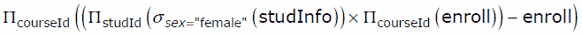
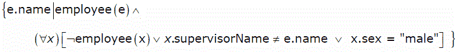
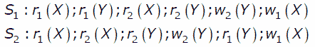

Following questions have been asked in GATE CS 2007 exam.
1) Information about a collection of students is given by the relation studinfo(studId, name, sex). The relation enroll(studId, courseId) gives which student has enrolled for (or taken) that course(s). Assume that every course is taken by at least one male and at least one female student. What does the following relational algebra expression represent?

{kind=link}
(A) Courses in which all the female students are enrolled.
(B) Courses in which a proper subset of female students are enrolled.
(C) Courses in which only male students are enrolled.
(D) None of the above
Answer (B)
The expression given in question does following steps in sequence.
a) Select studids of all female students and selects all courseids of all courses.
b) Then the query does a Cartesian Product of the above select two columns from different tables.
c) Finally it subtracts enroll table from the result of above step (b). This will remove all the (studid, courseid) pairs which are present in enroll table. If all female students have registered in a courses, then this course will not be there in the subtracted result.
So the complete expression returns courses in which a proper subset of female students are enrolled.
studinfo table studid name sex ------------------------ 1 a Male 2 c Female 3 d Female enroll table studid courseid ------------------ 1 1 2 1 3 1 2 2 3 3 3 2 Result of step b studid courseid --------------------- 2 1 2 2 2 3 3 1 3 2 3 3 Result of step c studid courseid ------------------- 2 3
2) Consider the relation employee(name, sex, supervisorName) with name as the key. supervisorName gives the name of the supervisor of the employee under consideration. What does the following Tuple Relational Calculus query produce?

(A) Names of employees with a male supervisor.
(B) Names of employees with no immediate male subordinates.
(C) Names of employees with no immediate female subordinates.
(D) Names of employees with a female supervisor.
{kind=link}
Answer (C)
The query selects all those employees whose immediate subordinate is “male”. In other words, it selects names of employees with no immediate female subordinates
3) Consider the table employee(empId, name, department, salary) and the two queries Q1 ,Q2 below. Assuming that department 5 has more than one employee, and we want to find the employees who get higher salary than anyone in the department 5, which one of the statements is TRUE for any arbitrary employee table?
Q1 : Select e.empId
From employee e
Where not exists
(Select * From employee s where s.department = “5” and
s.salary >=e.salary)
Q2 : Select e.empId
From employee e
Where e.salary > Any
(Select distinct salary From employee s Where s.department = “5”)
(A) Q1 is the correct query
(B) Q2 is the correct query
(C) Both Q1 and Q2 produce the same answer.
(D) Neither Q1 nor Q2 is the correct query
Answer (B)
Let the employee(empId, name, department, salary) have the following instance.
empId name department salary
——————————————–
e1 ——- A——– 1———10000
e2 ——-B ——- 5 ———5000
e3 ——-C ——- 5———-7000
e4 ——-D ——- 2———-2000
e5 ——-E ——- 3———-6000
Now the actual result should contain empId : e1 , e3 and e5 ( because they have salary greater than anyone employee in the department ‘5’)
——————————————————–
Now Q1 :
Note : EXISTS(empty set) gives FALSE, and NOT EXISTS(empty set) gives TRUE.
Select e.empId
From employee e
Where not exists
(Select * From employee s where s.department = “5” and
s.salary >=e.salary)
Q1 will result only empId e1.
———————————————————
whereas Q2 :
Select e.empId
From employee e
Where e.salary > Any
(Select distinct salary From employee s Where s.department = “5”)
Q2 will result empId e1, e3 and e5.
——————————————————–
Hence Q2 is the correct query.
4) Which one of the following statements if FALSE?
(A) Any relation with two attributes is in BCNF
(B) A relation in which every key has only one attribute is in 2NF
(C) A prime attribute can be transitively dependent on a key in a 3 NF relation.
(D) A prime attribute can be transitively dependent on a key in a BCNF relation.
Answer (D)
5) Consider the following schedules involving two transactions. Which one of the following statements is TRUE?

(A) Both S1 and S2 are conflict serializable.
(B) S1 is conflict serializable and S2 is not conflict serializable.
(C) S1 is not conflict serializable and S2 is conflict serializable.
(D) Both S1 and S2 are not conflict serializable.
{kind=link}
Answer (C)
S1 is not conflict serializable, but S2 is conflict serializable
Schedule S1
T1 T2
---------------------
r1(X)
r1(Y)
r2(X)
r2(Y)
w2(Y)
w1(X)
The schedule is neither conflict equivalent to T1T2, nor T2T1.
Schedule S2
T1 T2
---------------------
r1(X)
r2(X)
r2(Y)
w2(Y)
r1(Y)
w1(X)
The schedule is conflict equivalent to T2T1.
Please write comments if you find any of the answers/explanations incorrect, or you want to share more information about the topics discussed above